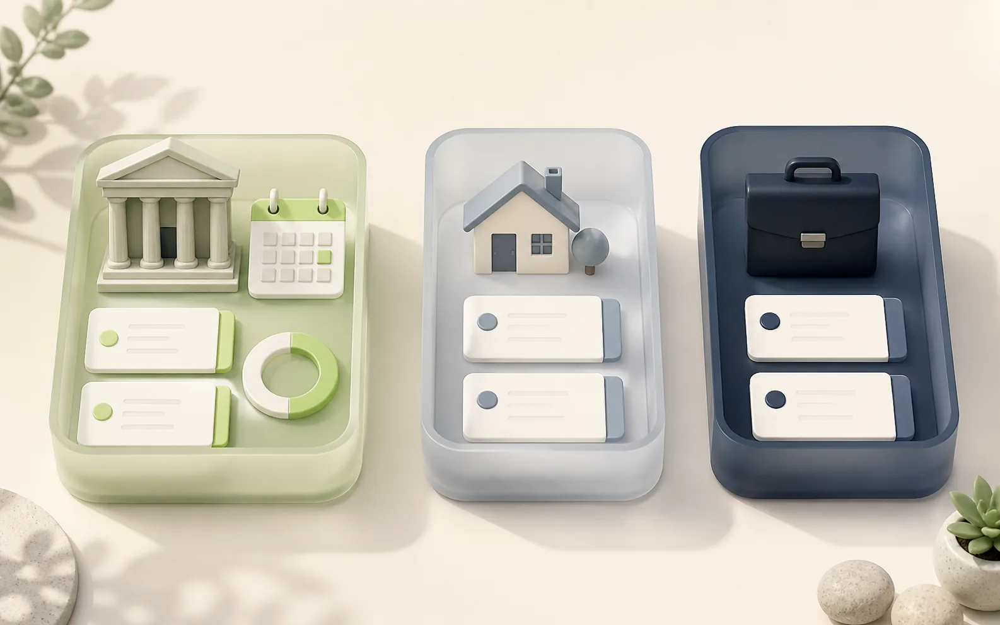

Manual debt repayment tracker for iPhone
Track Every Debt Payment and Keep Your Payoff Plan Current
You Owe Me gives you a personal working record for installment debts you repay to banks and other lenders. Keep each loan separate, record what you actually paid, and see the balance in your record, next installment, reminder, and projected payoff update after partial, extra, early, or late payments—without linking a bank account.
iPhone app. Manual tracking. No bank connection or payment processing. One active repayment plan is available free.
What does a manual debt repayment tracker do?
A manual debt repayment tracker keeps your own record of what you owe, what you paid, what remains in the plan you entered, and what needs attention next. Instead of importing bank activity, you enter confirmed figures yourself and compare them with the lender's latest statement. This is useful when you want a clear repayment history and reminders without giving an app access to a bank account.
The lender's figure stays official. Your tracker helps you organize the work between statements.
Built for installment debts you are already repaying
Use this method when a lender gives you a current balance, a payment amount or due date, and statements you can check. The app does not need access to the lender account because you maintain the record yourself.
Bank or credit union
Personal installment loan
Keep the lender, current confirmed balance, scheduled payment, actual payments, and the next statement check connected in one named loan record.
Vehicle finance
Car or other fixed-term loan
Record regular and extra payments and follow your working projection while continuing to use the finance provider's statement as the official balance.
Other formal repayment plan
A debt with clear installment terms
Track another fixed installment account when you can verify the balance, frequency, next due date, and any interest terms from the provider.
Start from a figure you can verify
Create one debt record from the latest lender statement
Do not begin by reconstructing years of history from memory. Start with the newest balance the lender confirms, then keep a clean record from that point forward.
Create one record for each obligation. If the same institution holds two different loans, keep two named loans so their balances, payments, due dates, and plan terms do not blur together.
DEBT RECORD
Debt name:
Lender:
Account reference (optional—last four digits only):
Statement date:
Official outstanding balance on that statement:
Regular or scheduled payment:
Payment frequency:
Next due date:
Interest or rate note from the statement:
Recent payments not yet reflected on the statement:
Extra, partial, late, reversed, or adjusted payments to verify:
Last reconciled with the lender:
What I need to check next:Copy figures exactly from the current statement. Do not store a full account number, password, login code, or other bank credential in this template.
Use today's confirmed starting point
If earlier payments are incomplete or uncertain, record the current lender-confirmed balance. Do not subtract old payments from that balance a second time.
Keep pending payments visible
If a payment has left your account but is not on the latest statement, list it as pending until the lender posts or confirms it.
Name differences instead of hiding them
When your record and the statement differ, note the gap and investigate posting dates, interest, fees, reversals, or changed terms. Never invent a payment to force a match.
A five-minute check-in
Reconcile your record when a new statement arrives
A manual debt tracker is useful only when it stays connected to real lender information. Use the same short check whenever a statement is issued or the lender confirms a new balance.
-
Open the newest lender statement
Confirm the statement date, outstanding balance, scheduled payment, next due date, and any interest, fee, or rate information shown by the lender.
-
Record payments that actually happened
Add each regular, partial, extra, early, or late payment using the real amount and date. A planned installment is not a payment until it has actually been made.
-
Compare the two balances
Compare the lender's current figure with your working record. Allow for payments that are still pending, but do not assume every difference is a timing issue.
-
Resolve or label the difference
Check posting dates, interest allocation, fees, reversals, and changed terms. If the lender confirms a different current balance, use that confirmed figure as the new starting point and keep a note explaining the adjustment.
-
Set the next useful action
Update the repayment plan only when the real terms have changed. Then confirm the next payment and reminder and note when you will reconcile again.
The plan follows the record
See what an extra, partial, or late payment changes
A static schedule shows what was supposed to happen. You Owe Me connects the repayment plan to the payments you actually record, so completed history stays factual while future installments remain a projection.
The app applies payments under the plan terms you entered and refreshes the current installment, reminder, plan progress, and projected payoff. Your lender may use different posting, interest, fee, or rounding rules, so confirm the result against the next statement.
For the complete product view, see how Loan Records keep separate debts and their repayment plans connected.
Regular payment
Record the actual amount and date. The payment becomes part of history, the current installment advances, and the reminder moves to the next unpaid installment.
Partial payment
The amount paid is preserved as real history. The unpaid part of the oldest installment remains open, and the reminder follows that remaining amount and due date.
Extra or early payment
The payment covers the oldest amount due first and then moves forward. Under the plan recorded in the app, the regular payment can stay the same while the projected payoff moves earlier.
Late or missed payment
The oldest unpaid installment remains visible. The plan can extend, and the reminder follows the overdue or next unpaid amount instead of repeating an outdated original alert.
Recorded payments are history. Future installments are projections.

Worked recordkeeping example
Track a car-finance account without pretending to replace the lender
This example shows the recordkeeping flow, not an official payoff calculation. Use the figures and rules supplied by your own finance provider.
| What happens | What you record | What remains authoritative |
|---|---|---|
| A statement arrives on 31 August | Car finance — $9,840 current confirmed balance — $450 scheduled monthly — next due 15 September | The provider's 31 August statement and loan terms |
| You pay $450 on 15 September | One real payment of $450 on the date it was made | The provider's posting and allocation of that payment |
| You make an extra $200 payment on 22 September | A second real payment of $200, kept separate from the regular payment | Whether the provider applies it to principal, interest, fees, or another category under the agreement |
| The next statement arrives | The new confirmed balance, any changed terms, and a reconciliation note if the figures differ | The provider's current statement or confirmed account figure |
In You Owe Me, the two payments remain visible as real history and the app refreshes its working repayment-plan projection. It must not be described as proving the lender's official new balance.
Optional organization with Spaces
Keep formal debts separate from personal IOUs and work records
If you use Spaces to keep formal debts separate, create a “Debt & loans” Space and add each lender there. Every Space keeps its own people, entries, and total, so institutional debts do not have to be mixed with family reimbursements, friend-to-friend loans, or work records.
Inside that Space, give each obligation its own loan name. “Car finance” and “Personal installment loan” should remain separate even when the same institution provides both.
This is organization, not payoff prioritization. You Owe Me can keep each loan's record and plan clear, but it does not choose which debt should receive extra money first.
- Suggested Space
- Debt & loans
- Record 1
- City Credit Union — Car finance
- Record 2
- North Bank — Personal installment loan
- Record 3
- Education provider — Fixed payment plan

Use a projection only when it matches the terms you know
A manual record can track a lender-confirmed balance even when you do not model interest in the app. Add a repayment plan only when the terms you enter reasonably match the agreement you are following.
No new interest
Use this when the current confirmed balance already includes everything you intend to track and no additional interest should be projected.
Fixed total interest
Use this only when a known total interest amount belongs to the plan and can be entered without guessing.
Reducing-balance annual interest
Use this when an annual rate and reducing-balance method reasonably match the known loan terms. Payments in the app apply accrued interest before principal under this plan model.
If you only need to explore an initial no-interest schedule, use the Payment Plan Calculator.
A personal record and planning tool—not a lender account
You Owe Me helps you maintain the record. The lender still controls the account, calculates the official balance, applies the agreement, and receives the payment.
You Owe Me can
- Keep each lender and named loan separate
- Record regular, partial, extra, early, and late payments
- Maintain one active repayment plan per named loan, with earlier plan history
- Show weekly, every-two-weeks, or monthly installments
- Refresh the next installment, reminder, plan progress, and projected payoff after recorded changes
- Start from a current confirmed balance when a loan is already in progress
- Include an active-plan summary in a shareable loan PDF
- Organize debt records in a separate Space when Spaces are used
It does not
- Connect to a bank or lender account
- Import, detect, initiate, withdraw, or process payments
- Provide the lender's live or official balance
- Guarantee how a lender allocates an extra payment
- Model every variable rate, fee, penalty, escrow, or revolving-credit rule
- Choose a debt snowball, avalanche, consolidation, refinancing, or settlement strategy
- Provide financial, legal, tax, credit, or debt-collection advice
- Replace the loan agreement, lender statement, or official payoff quote
Use the app to keep your work clear. Use the lender to confirm the account.
Questions about tracking debt repayments manually
Can I use You Owe Me to track a bank loan?
Yes, as a manual personal record. Enter the lender, a current balance you can confirm, the repayment terms you know, and each payment you actually make. Continue using the bank or lender statement as the official balance and account record.
Does the app connect to my bank or lender?
No. You Owe Me does not ask for a bank login, import lender transactions, move money, or detect payments automatically. You enter and reconcile the record yourself.
Can I track more than one debt?
Yes. Keep each lender and obligation in a separate named loan record. If you use Spaces, you can also keep formal debts in a dedicated “Debt & loans” Space, separate from personal, family, or work records. The app tracks each record; it does not choose which debt to pay first.
What happens when I make an extra or partial loan payment?
Record the real amount and date. Under the repayment-plan terms entered in the app, a partial payment leaves the oldest installment partly open, while an extra payment can move forward and change the projected payoff. Check the next lender statement because the lender may allocate or post the payment differently.
Can the app track loan interest?
A repayment plan can use no new interest, a fixed total interest amount, or reducing-balance annual interest. It does not reproduce every variable rate, fee, penalty, credit-card rule, or lender-specific calculation. Use only terms you can verify and treat the lender's figure as official.
Can I start tracking a loan that is already in progress?
Yes. Start from the amount the lender confirms is outstanding now. Add earlier-payment context only when it is useful, and do not subtract those payments from the confirmed balance again. From that point forward, record real payments and reconcile each new statement.
Is You Owe Me a debt snowball or avalanche app?
No. It can keep separate loan records and repayment plans, but it does not rank debts or recommend where extra money should go. It is a recordkeeping and planning tool, not a debt-strategy adviser.
Keep a personal record that changes when your payments do
Start from a lender-confirmed balance, record what you actually pay, and compare your working record with each new statement. You Owe Me keeps the named loan, plan, payment history, next reminder, and projected payoff together on iPhone.
iPhone app. Manual tracking. No bank connection or payment processing. One active repayment plan is available free.
Want to understand storage, syncing, and control before you begin? Review Privacy & Data.
Updated